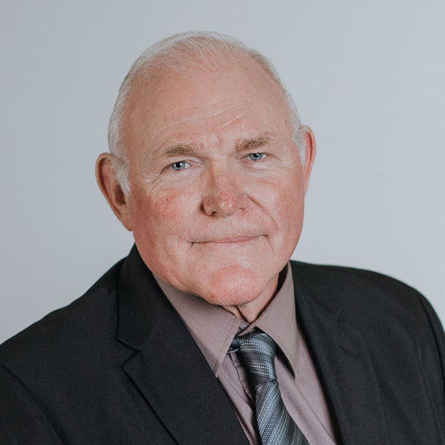
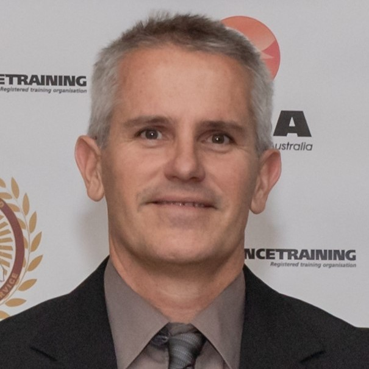

Tim commenced with QMRS in February 2019 in the role of General Manager of Operations. He has 48 years’ experience in the coal industry, nationally and internationally, having worked at mines in the Northern, Southern and Western coalfields of New South Wales, the Bowen Basin in Central Queensland, Indonesia and the United States of America. Tim was an active member of mines rescue in NSW and Qld for 10 years.
He has held a variety of operational and corporate positions during that time, including Mine Mechanical Engineer, Maintenance Manager, Undermanager In Charge, Production Manager, Longwall Manager, Mine Manager, General Mine Manager, Inspector of Mines and Corporate Risk Manager.
Tim holds qualifications in 1st, 2nd and 3rd Class Certificates of Competency (Qld and NSW), Mine Mechanical Engineers Certificate of Competency (NSW), Ventilation Officer (Qld), Shotfirer (Qld and NSW), a Masters Degree in Business and Technology (MBT) from the UNSW and is a fellow in the AusIMM.

Ray has been part of the Queensland coal mining landscape for more than 25 years and continues to be a driving force behind the operational strength of QMRS. Starting his career at Newlands Coal in 1998, Ray went on to work at Oaky Creek Coal from 2002 to 2011, where he developed a solid foundation in emergency response and mine safety.
Throughout his career, Ray has held a variety of frontline and leadership roles including ERZ Controller, Fire Officer, Shotfirer, Site Safety and Health Representative, and Mines Rescue Coordinator. His depth of experience and hands-on knowledge have made him a key contributor to Incident Management Teams during several critical deployments across Queensland.
Ray joined QMRS as Operations Manager in 2011 and stepped into the role of General Manager – Operations in 2022. He’s well regarded for his unwavering commitment to the principles of mines rescue and for championing the professionalism of our teams across the industry.
Ray holds an Advanced Diploma in Underground Mining, a Deputy Class 3 qualification, and diplomas in Business Management, WHS, Risk Management, and Emergency Management.
Trent commenced with QMRS in July 2020 in his current position of Executive Business Manager. He possesses a comprehensive range of skills and knowledge gained from holding a variety of positions ranging from an Operations Manager to a Managing Director whilst working throughout QLD, NSW and South Africa.
Trent holds qualifications in information technology, business, safety and accounting along with national high risk licences, height safety equipment inspection tickets and security/investigation licences.
Trent is a member of the Australian Institute of Directors, the Master Builder Association and holds a Certificate of Authority in Queensland.